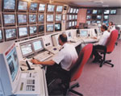

- surveillance -
|
AMA's report on corporate's monitoring Big Brother Awards Austria cctv database - maahee - communicating to the masses cdt Wiretapping NYC Surveillance Camera Project PRIVACY INTERNATIONAL - Video Surveillance Page Surveillance - Surveillance List Forum FAQ Technological Surveillance in the Workplace The Big Brother Awards The Surveillance List Forum Who's Watching You CDT's Snoop 2. . AMA's report on corporate's monitoring Big Brother Awards Austria cctv database - maahee - communicating to the masses cdt Wiretapping NYC Surveillance Camera Project PRIVACY INTERNATIONAL - Video Surveillance Page Surveillance - Surveillance List Forum FAQ Technological Surveillance in the Workplace The Big Brother Awards The Surveillance List Forum Who's Watching You CDT's Snoop 2. .. |
|  |
UK Public CCTV Surveillance Regulation Campaign Cyborg - Steve Mann Book and How to watch the watchers UK Public CCTV Surveillance Regulation Campaign Jim Campbell installation Public Video Surveillance No Hiding Place NY Times (Sunday Magazine section) The Unblinking Eye Spy TV N. . UK Public CCTV Surveillance Regulation Campaign Cyborg - Steve Mann Book and How to watch the watchers UK Public CCTV Surveillance Regulation Campaign Jim Campbell installation Public Video Surveillance No Hiding Place NY Times (Sunday Magazine section) The Unblinking Eye Spy TV N. .. |
|
About us After 11 September 2001 Founding Documents Funding and Expenses Getting Involved Museum Exhibitions Position Papers Privacy Policy U. . New York Surveillance Camera Players Only someone completely distrustful of all government would be opposed to what we are doing with surveillance cameras. -- NYC Police Commissioner Howard Safir, 27 July 1999. About us After 11 September 2001 Founding Documents Funding and Expenses Getting Involved Museum Exhibitions Position Papers Privacy Policy U. |
. To facilitate the briefing, I am providing the following list of questions we hope that Chief Gainer will address. If there is to be a meaningful discussion of the complexities of the MPD camera surveillance program, it is essential that the Police Department discuss this subject in its presentation. Undoubtedly, there will be other questions to be addressed as the Council and the public learn more about the camera surveillance program. .
 |
further information: http://www.tate.org.uk/modern/programmes/webcasting/surveillance.htm#